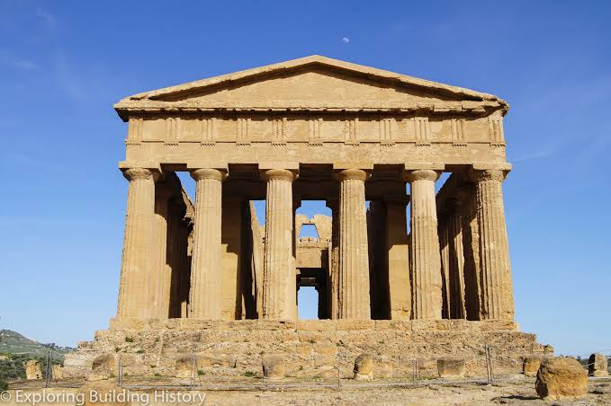

Temples in Classical Age
Temples were amont the most important buildings in Classical Greece, and they were mainly built to honor the gods and goddesses who were believed to protect Greek cities and influence everyday life. They were usually placed in important locations, such as the top of a hill. within sacred are called a sanctuary, or in the center of a city. Each temple was dedicated to a particular god or goddess, and it often contained a statue of that deity. For example, the Parthenon in Athens was dedicated to Athena, the goddess of wisdom and the protector of the city. It was built on the Acropolis during the 5th century BCE, when Athens was becoming a powerful cultural and political center. Other famous temples included the temple of Apollo at Delphi, where people traveled to consult an oracle, and the Temple of Zeus at Olympia, which was connected to the ancient Olympic Games. Temples were not exactly like modern churches, because most religious ceremonies took place outside, in front of the building, where an altar was located. The temples themselves were designed to protect the statue of the god and demonstrate the city's wealth, religious devotion, and artistic skills. Their decorations often included sculptures showing scenes from Greek mythology, battles between gods and monsters, and stories about legendary heroes.